Driving theory practice that learns from every answer
Theory Trainer is a practice app for the UK car theory test. A little practice every day, questions read aloud, mock tests like the real one, and a coach that brings back the questions you keep getting wrong.
Try questions free, then or . Works on phone, tablet and computer.
Try a free sample of questions before you pay. Works on phone, tablet and computer.
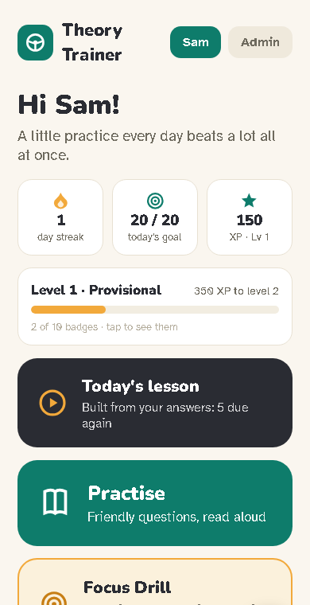
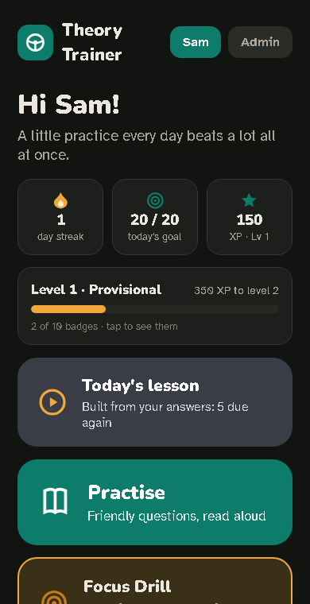
Who it's for
Learner drivers
Anyone getting ready for the UK car theory test who wants short, friendly practice sessions on their phone, with every question and answer read aloud if they like.
Parents and families
One account covers every learner in a family and every device. The admin view shows how each learner is doing, and each learner's progress stays their own.
What it does
Everything below is in the app today.
Practise, read aloud
Questions from all 14 DVSA topics, each with four options, an explanation and a Highway Code reference. Pick your weakest topics, a bit of everything, or build your own mix. A 50:50 hint is there when you need it.
Mock tests like the real one
50 questions, 57 minutes, 43 correct to pass. No feedback until the end, flag a question and come back to it, then review every answer.
My answers
Every question you have answered, newest first, with what you said and the right answer. Tick any of them to practise again or turn into your own timed or untimed test.
More like this
After any practice answer, one tap brings similar questions into your session. At the end of a session, "More like the ones I missed" does the same for everything you got wrong.
Road signs
Learn the signs with their meanings spoken, then quiz yourself on them.
A daily habit
A daily goal of 10, 20 or 30 questions, a day streak, XP and levels from Provisional to Full Licence, and badges earned from real practice.
See how you're doing
A summary after every session, a readiness score, traffic lights for each topic, your mock test trend and the questions you find hardest.
Notes, flags and printing
Add notes on any screen, flag questions to come back to, and print flashcards, a test paper or an answer book.
Easy to read
Bigger text, an easy-reading font, high contrast, reduced motion and dark mode, all in Settings.
Works offline
Install it on your home screen and it keeps working without a signal. A test in progress survives a reload or a flat battery.
How the coaching works
The app keeps every answer and uses them to decide what you practise next.
Every answer counts
Each practice and mock answer is saved to your account, so your progress follows you from phone to tablet to computer.
Missed questions come back soon
Questions move through boxes: the ones you miss come round again soon, the ones you know come back less often.
Today's lesson is built from your answers
It starts with the questions you keep missing, the ones you flagged and the ones due again, then tops up with a few you have not seen yet.
"Keeps tripping you up"
The coach shows the questions you keep missing, the wrong answer you tend to pick, and a memory tip. Tips are drafted by AI from the question's own words, checked for made-up numbers, and only shown once a person has approved them.
Mock tests make the score honest
Your readiness score leans on your mock test results. Until you have done one, the coach tells you so.
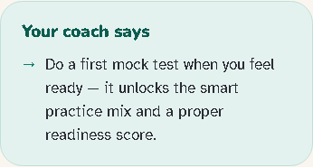
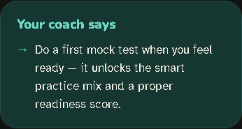
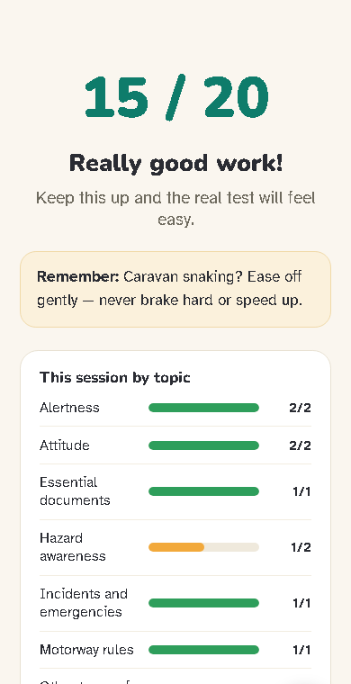
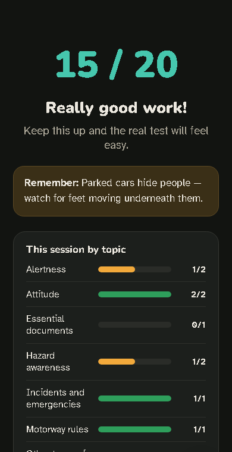
See it
Real screens from the app, taken with a demo learner and the free sample questions.
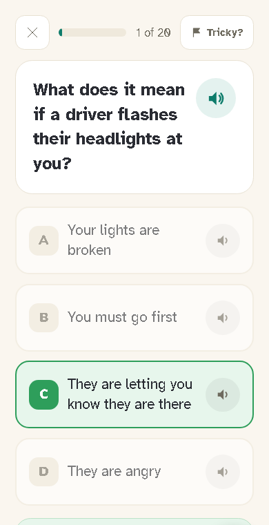
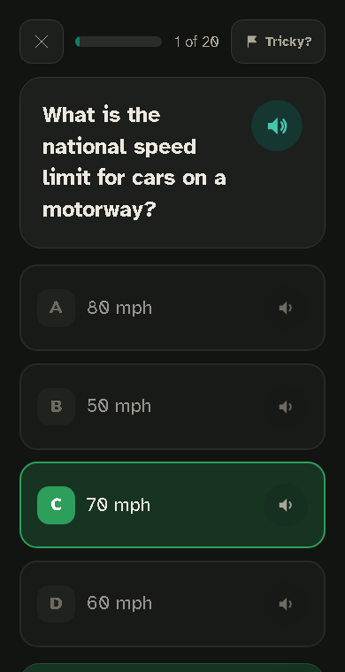
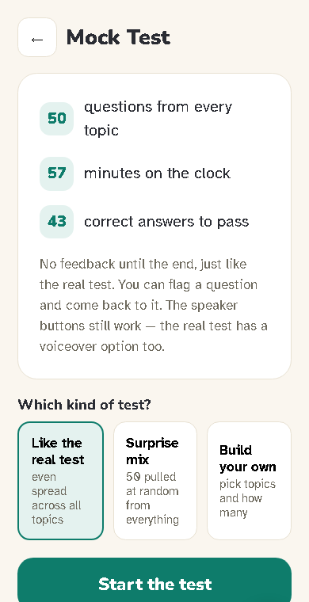
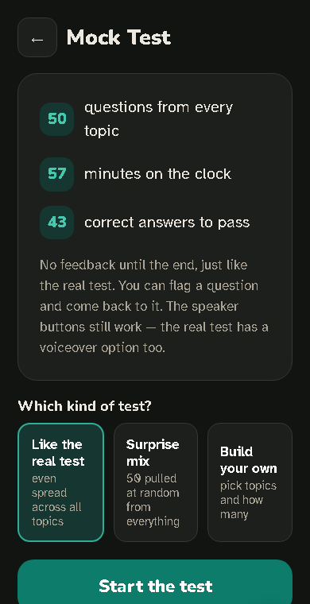
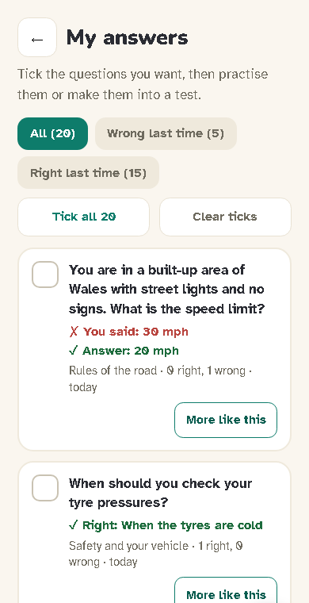
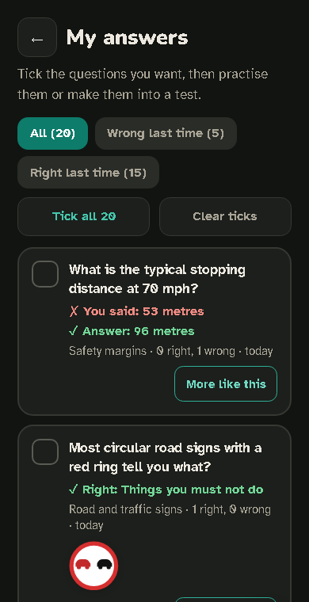
Try it free, then one simple price
Free sample
questions free
A free sample
Create an account, then choose to try the free questions before you decide whether to pay.
Full access
or
See the prices in the app
All 14 topics, mock tests, progress tracking and read-aloud.
- One account for every learner in the family
- Payment is handled by Stripe
- Cancel any time, from the app
Put it on your home screen
It opens full screen with its own icon, like any other app, and works without a signal.
iPhone and iPad (Safari)
- Open the app in Safari.
- Tap Share (in some layouts, tap ••• first, then Share).
- Scroll down and tap Add to Home Screen.
- Leave Open as Web App on, then tap Add.
Android (Chrome)
- Open the app in Chrome.
- Tap More ⋮ at the right of the address bar.
- Tap Install and create shortcut, then Install.
Computer (Chrome)
- Open the app in Chrome.
- Select More ⋮, then Cast, save and share, then Install page as app…
- Or, if you see it, select Install at the right of the address bar.
Step-by-step help for every screen is in the how-to guide.
Good to know
Not affiliated with the DVSA. Theory Trainer is an independent app. It is not made, endorsed or checked by the Driver and Vehicle Standards Agency (DVSA).
The questions are our own, written in the same format as the real test, each with an explanation and a Highway Code reference. They are not the DVSA's official revision question bank, which is licensed and not published.
Practice helps, but no app can promise a pass.
Sign pictures. Road sign images: Crown copyright, Department for Transport. Contains public sector information licensed under the Open Government Licence v3.0. Road marking and light signal images: Crown copyright, The Highway Code. Contains public sector information licensed under the Open Government Licence v3.0. Read the licence.